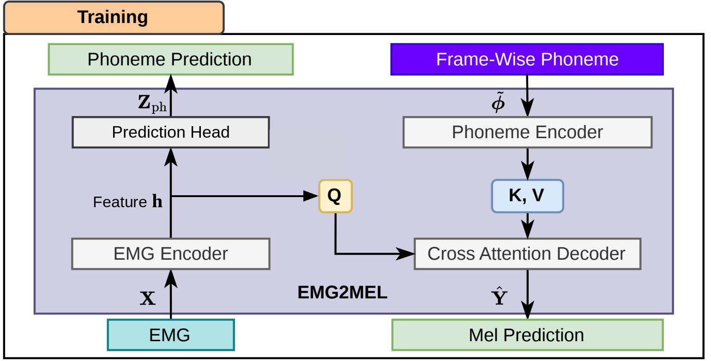
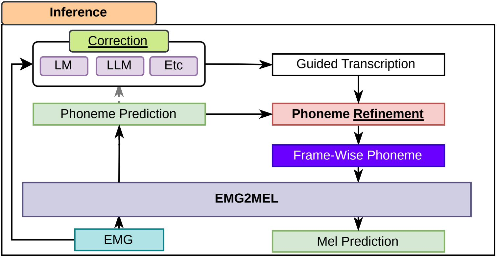

Abstract
Electromyography (EMG)-to-speech (ETS) synthesis generates speech from articulatory muscle activity without acoustic input. We propose TAP-ETS, a time-aligned phoneme guiding framework that conditions mel-spectrogram generation on frame-wise phoneme sequences through cross-attention. Unlike prior work that treats phonemes as auxiliary supervision, our model injects aligned phoneme embeddings directly into the decoder. We also introduce refinement strategies that redistribute merged semantic guidance over frame-wise EMG signals, enabling the seamless integration of arbitrary phoneme- or text-level correction methods without modifying the synthesis model. On the Gaddy silent EMG benchmark, TAP-ETS reduces WER from 25.12% to 19.77%, achieving state-of-the-art performance and demonstrating the importance of accurate frame-level alignment.
Method

Figure 1. Schematic diagram of ETS training with time-aligned phoneme conditioning. The EMG encoder feature h serves as the query, and time-aligned phoneme embeddings serve as key / value of the cross-attention decoder.

Figure 2. Schematic diagram of semantic guiding with time-aligned phoneme refinement during inference. Any phoneme- or text-level correction module can be plugged in without modifying the synthesis model.

Figure 3. Schematic diagram of semantic guiding with TAP. (a) illustrates the Levenshtein distance based alignment. (b) shows the training procedure of the masking-based refinement model.